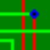
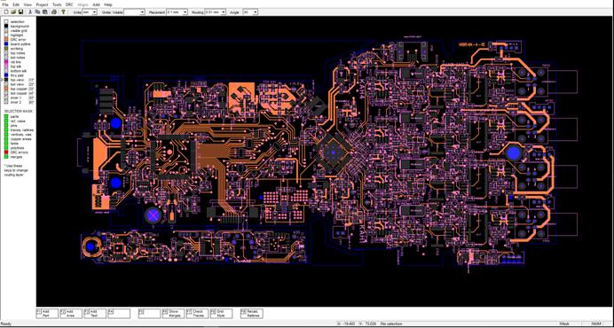

†FreePcb
Development branch by
Duxah Æ 2014-2019.

1 English
Download FreePcb††††††† Watch video††††††† Ask a Question††††††† Home
FreePcb is a program for designing printed
circuit boards for Microsoft Windows. The FreePcb-2.000 and above program presented on
this site is an upgrade of version 1.359 published in 2010. Now FreePcb has
made great strides in comparison with the 2010 version and is suitable for both
simple and large-scale developments, although the appearance of the program has
remained unchanged. Includes footprint editor, provides the ability to create
your own libraries, can import external netlists in the PADS-PCB format. The
program is focused on accessibility, ease of use, saving computer hard disk
memory, but at the same time it includes almost all the tools necessary for
professional use. Supports the preservation of REF-names of parts when paneling
printed circuit boards. A distinctive feature of this program is the interface
with the use of function keys.
Improvements and new features:
-
Improved graphical display of selected objects
-
Improved detailing frame
-
free rotation of parts
-
moving the
group to the opposite side
-
set of zero coordinate on any object(menu TOOLS)
-
merge a
group
of parts into one object
-
Improved work with polygons
-
the ability to set a specified gap between any lines (set_clearance)
-
preparation of the code for the introduction of micro transition
holes
-
possibility of rounding corners of traces
-
possibility of adding smooth transition holes
-
changing some parameters at once
-
combining several footprints into one directly in PCB editing mode
-
the ability to organize libraries alphabetically, by the number of
pins or by the number of holes
-
external program INFOBOX.EXE knows how to find
parts
on a printed circuit board
-
in freepcb, you can not fill copper polygons. gaps are drawn
automatically when creating the Gerber files, but sometimes you need to fill
it. External program AREA_SPLITTER.EXE fills
polygons
-
export to
mechanical format dxf
-
import from dxf
-
Export to
commercial PCAD (ACCEL ASCII)
-
Import PCAD( ACCEL ASCII )
(2014-2017)
Version 2-019 (2018-02-20):
-
The function of automatic selection of
parallel segments for quick editing is added
-
AREA_SPLITTER.EXE and INFOBOX.EXE
improved,
show pins
Version 2-020 (2018-05-01):
- added 3 new layers: 2 for
notes, scribing
- when moving the origin in the
footprint the position of the part on the board remains
- when selecting a detail pin,
the network is also highlighted
- in export DXF_3dFaces
drawing of pads by solid
- in InfoBox when
clicking on a cell in the column "Net in PCB" on the left all pins of this
net are displayed
- in InfoBox when clicking on a
cell in the "Pin" column on the right all pins of this detail are
displayed
†Version
2-021 (2018-06-01):
-
in the InfoBox column is added the range of
indexes
of notation details
-
added the SET ORIGIN TO SELECTED ITEM function in the TOOLS menu
-
2 grid styles: points and lines
-
Improved auto-refs (REF-AUTO-POS)
-
added the SHOW_MERGES (F6) button to find the merge on the board, selection several mergers
†Version
2-022 (2018-07-22):
-
added the SELECT ALL button in the EDIT menu
Version 2-023 (2018-10-07):
-
in the footprint editor added the ability to create pins with one
common name (MULTIPIN)
-
added the ability to divide the net into 2 different (SPLITNET)
-
added the ability to block a netlist in the Project-> Nets menu
...
Version 2-024 (2018-12-31):
-
added a button to select all objects located inside any polyline
(F9 INSIDE CONTOUR)
-
copper polygon with edge thickness 0 and the none fill style is
now a ghost polygon, and serves as a fill area for the program Area Splitter
-
rotation of a group of objects at any integer angle
-
if the symbol | is added to the element designation (REF) that the
text after the symbol on the printed circuit board is not displayed (for
multichannel devices).
-
display of clearance when the trace segment moves by the
keyboard arrows (set in the TOOLS->DRC->trace to trace, you can
temporarily change it with the SET_CLEARANCE function, return to the initial
value when you save the file again).
Version 2-025 (2019-04-12):
The
SET_CLEARANCE function becomes universal and takes on a larger scale. For
example, you can set clearance between the segment of trace and the side of
copper area.
-
the measurement tool (activated with the M key) leaves a trace on
the screen with the display of numerical value, and is a polyline, i.e.
allows you to measure the perimeter of a polygon
-
Opening a file by dragging on the window
Version 2-026 (2019-04-19):
-
Added option to the LAYERS menu: file colors versus system colors.
Version 2-027 (2019-04-27):
-
Improved SET_POSITION
function for polyline vertices
Version 2-028 (2019-06-12):
-
In the footprint editor, you can edit a group of objects:
duplication, rotation, mirroring.
-
Added warning in DRC check if PCB name is missing
-
When you press the buttons 3 or 4 again, the silk screen layer
goes to the background
-
Now you can move the side of the polyline with the keyboard arrows
-
A button to quickly export
gerber files to ViewMate has been added to the File menu. (for viewing and
printing)
-
Overwrite protection when saving a file that was created in
FREEPCB version 1.359
-
Specifying
a folder with FREEPCB projects in the INFOBOX SETTINGS menu is no longer
required (21.06.2019)
The download (Updated 25.06.2019!)
includes a folder with the program, manual
1.359, footprint libraries, examples of printed circuit boards, a description
of the 2.028 file format for developers.
useful links:††††
FreePcb-2..
on Github.com
(please wait)
†††††††††††††††††††††††††††††††††††
 If you like the program
FreePcb2.028 place the link www.freepcb.online on your site. Have fun using FreePcb 2!
If you like the program
FreePcb2.028 place the link www.freepcb.online on your site. Have fun using FreePcb 2!
-
Hilite first pin and printing
-
Example
routing
-
Example
routing with external netlist
-
Export DXF
example
-
Copper area
cutter
-
Change side (for group)
-
Set Clearance more
-
Set Ref & Value size (for group)
-
Radius of trace to raise/lower
-
How to save
designations when panelizing
-
1 way
-
2 way
-
How to save
footprints when paneling if the footprint names in files are the same, but
footprints are different (it happens)
Contacts.
 †Use the forum on Yahoo Group.
†Use the forum on Yahoo Group.
-
Follow the link to the forum, register and ask any questions about
the program.
-
If you have any suggestions related to FREEPCB or you do not want
to submit your question for public review, send an email.
-
If you want to improve the translation of this document send your
file from https://www.freepcb.online/Discuss/